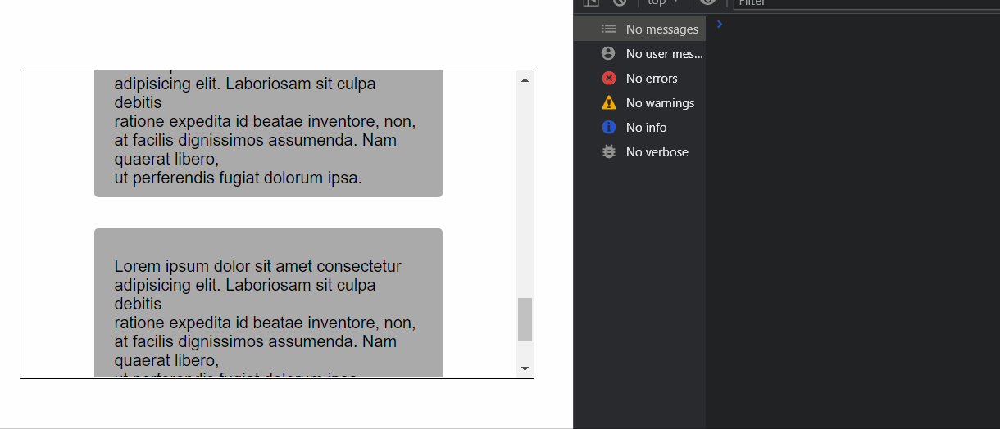
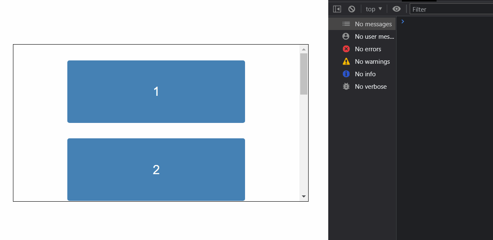

還不錯用～
基本概念
簡單來說 IntersectionObserver 是一個物件，你必須先定義好一些設定：
- root 外層容器
- target 容器中會出現的元素
- threshold 重疊率
- callback 進入跟離開可視範圍時就呼叫 callback 來通知你
原理是在背後監聽 root 和 target 的「重疊程度」，當達到指定的「可視範圍」時就呼叫 callback
不同於 scroll 事件的地方是，它的精準度不能計算到 1 個 px 不差，意思是說 threshold 設為 0 的時候未必會在「剛好 0px」的時候才觸發 callback，有可能是 0.01 或 0.1。（不過通常你也不太需要精準到 100%）
基本上就是這樣，剩下的用範例來解釋吧。
範例
基本結構
1 | // 外層容器 |
備註：root 沒有設定的話預設是 null，這時候會等於瀏覽器的 viewport。
結構大致上就是這樣，注意一下 IntersectionObserver 在 new 的時候有兩個參數：
callback進入跟離開可視範圍時通知你，你可以在這裡做事情options一些可以設定資訊，root 是誰，重疊率多少的時候才算可見等等之類的。
最重要的是 threshold 的值，這個代表 root 跟 target 的重疊率多少時要呼叫 callback。
舉例來說，如果設為 1 就代表「必須在容器中完整看到 target」才會觸發 callback；如果設為 0 就代表「只要在容器中一看到 target」就觸發 callback。
另外還有個地方要特別注意，就是呼叫 callback 的時機點是「進入」跟「離開」時都會觸發，意思是說一開始 target 進入視線時會觸發一次，當 target 離開視線也會再觸發一次。

這邊的 threshold 是設為 0，所以一看到 target 就會觸發 callback，而離開的時候也會觸發一次。
callback 接收的兩個參數
分別是 entries 跟 observer：
entries，一個 Array 裡面裝著IntersectionObserverEntry物件，可以拿到一些必要資訊。observer，就是被 new 出來的observer物件自己
isIntersecting 跟 intersectionRatio 這兩個比較重要：
isIntersectingtrue / false 代表 target 可不可見，可以在 callback 中用它來判斷是「進入」還是「離開」的狀態。intersectionRatio就是「重疊率」，debug 的時候可以用它來檢查。
舉個例子：
1 | // 解構陣列 |

所以在製作無限滾動時，因為新增內容而離開可視範圍時會在觸發一次 callback，就會有「重複觸發」的問題。如果要避免這種情況，就能用 isIntersecting 來確認是「進入」可視範圍時才做處理。
無限滾動範例
原理不複雜，就是在一個 container 裡面放一個 sentinel（哨兵），當 sentinel 進入可視範圍時就透過 callback 來新增內容。
1 | <!-- 外層容器 --> |
1 | const root = document.querySelector('.root') |
這邊為了方便觀察所以把 threshold 設為 1，代表要「完整看到 target」才會觸發 callback。另外為了避免離開 target 時再次觸發所以要用 isIntersecting 來做判斷。
做個示範，先示範正確的做法：
1 | /* 只在進入的情況新增內容 */ |
錯誤的做法（會重複觸發）：
1 | /* 如果沒有檢查的話，其實就跟下面的做法是一樣的意思 */ |

注意因為觸發了兩次，所以內容一次多了 6 個。
總而言之注意這個問題就好，其他就差不多這樣了。